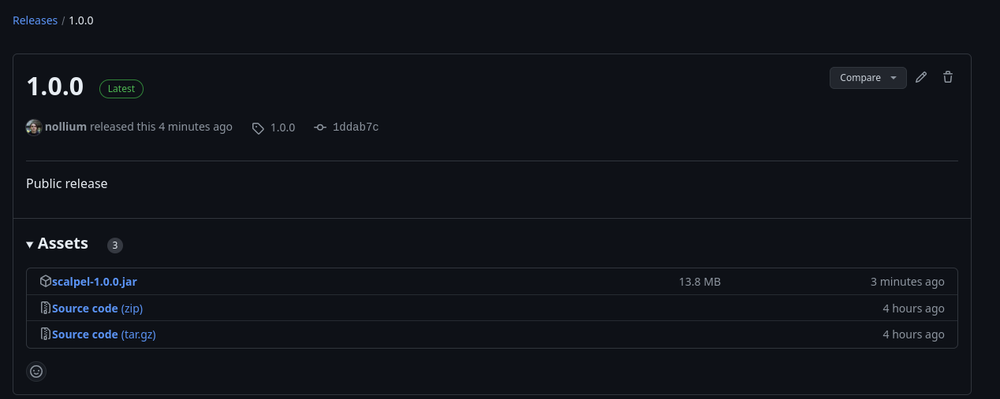
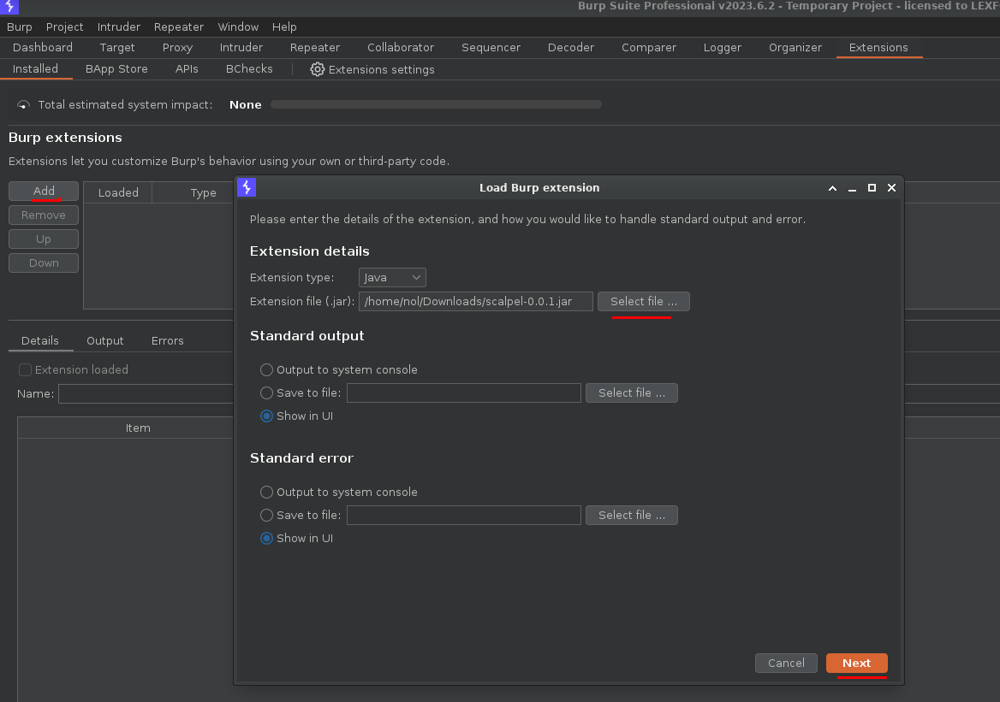
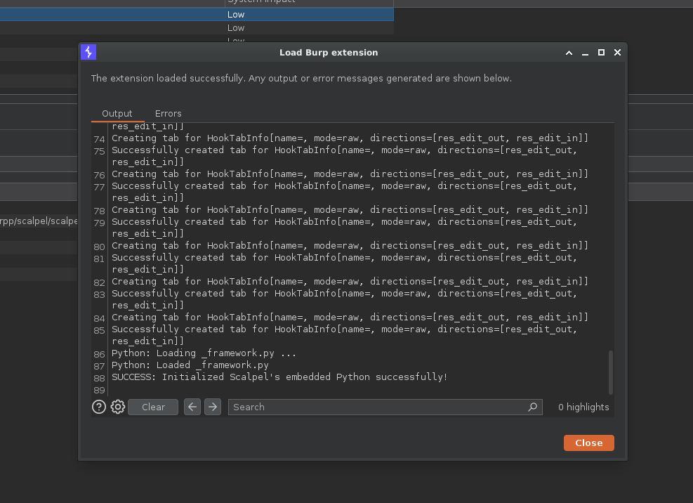
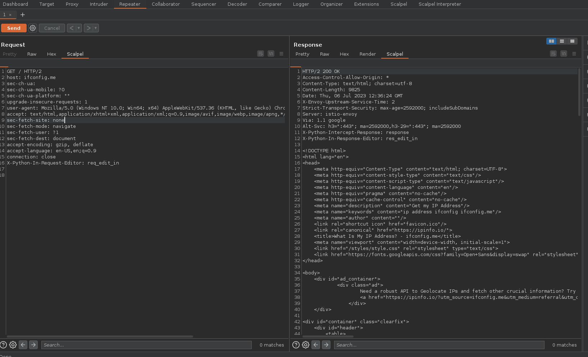
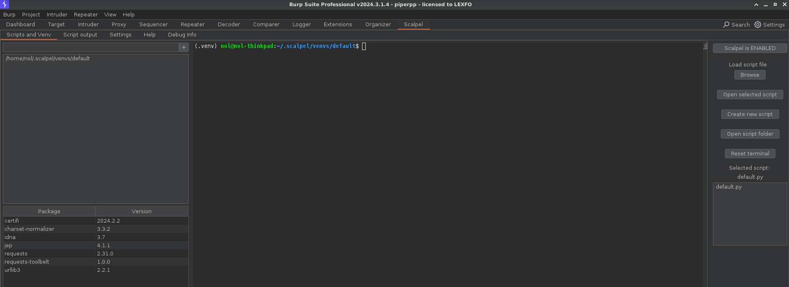

# Installation
# Requirements
- OpenJDK >=
17 - Python >=
3.8 - pip
- python-virtualenv
# Debian-based distributions
The following packages are required:
sudo apt install build-essential python3 python3-dev python3-venv openjdk-17-jdk
# Fedora / RHEL / CentOS
The following packages are required:
sudo dnf install @development-tools python3 python3-devel python3-virtualenv java-17-openjdk-devel
# Arch-based distributions
The following packages are required:
sudo pacman -S base-devel python python-pip python-virtualenv jdk-openjdk
# Windows
Microsoft Visual C++ >=14.0 is required: https://visualstudio.microsoft.com/visual-cpp-build-tools/
# Step-by-step instructions
-
Download the latest JAR release.
 -
Import the
.jarto Burp. -
Wait for the dependencies to install.

-
Once Scalpel is properly initialized, you should get the following.
 -
If the installation was successful, a
Scalpeltab should show in the Request/Response editor as follows: -
And also a
Scalpeltab for configuration to install additional packages via terminal.
Scalpel is now properly installed and initialized!
# 💡 To unload and reload Scalpel, you must restart Burp, simply disabling and re-enabling the extension will not work